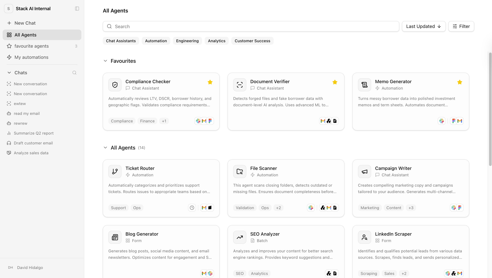
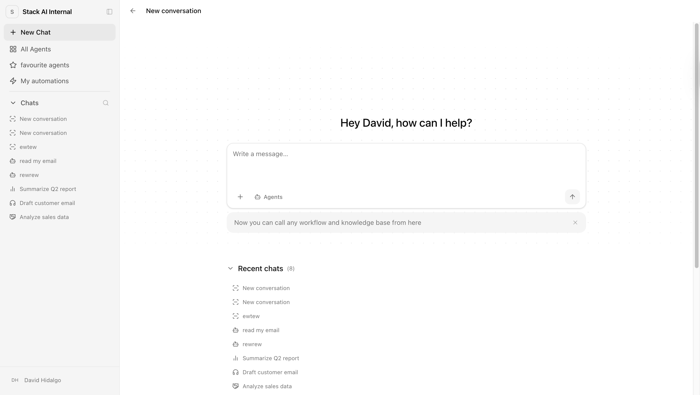
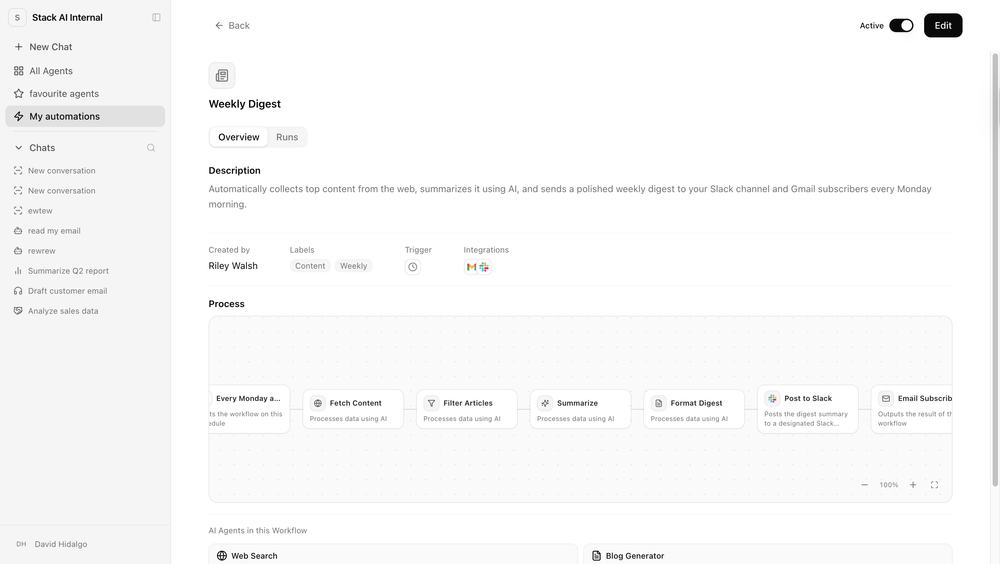

The Agent Grid is where employees discover and use their organization's AI workflows. This project covers its full evolution, from structure and curation to on-demand agents, background automations, and a chat-first entry point.
Company
StackAI (YC W23)
Product
Enterprise AI workflow platform
Role
Product Designer
Year
Q4 2025
The grid had no filtering, structure, or at-a-glance clarity. As workflows scaled, it became an overwhelming, undifferentiated list. No curation, access control, or branded feel as the customer's own product. Separately, trigger-based automations had no home at all, they were being shoehorned into the same card pattern as on-demand agents, creating confusion about setup, status, and ownership.
Builders assign department or category labels; end users filter to find relevant agents. Builders opt specific agents into the grid with access control so users only see what they have access to. The grid is styled to feel like an internal tool, not a branded third-party product, with tooltips, interface type indicators, and sort by most-used or last-updated. End users mark favorites and surface recently used agents.

A persistent chat interface becomes the primary landing surface for day-to-day tasks; the agent grid moves below it as a catalog and shortcut layer.

A separate surface for trigger-based workflows covering three jobs: discover (what's running in your org), configure + test (set up triggers and validate), and manage + debug (monitor health, inspect errors, act on failures).

What started as a simple app launcher is evolving into an org-wide AI operating surface, chat, agents, and automations in one place, each with a distinct interaction model.
The chat-first model doesn't replace the grid; it gives users a faster on-ramp when they don't know which agent to pick.
Background workflows have different states, failure modes, and ownership responsibilities than on-demand agents. Forcing them into the same card pattern was the wrong abstraction.
If it looks like a third-party tool, enterprise employees won't adopt it. White-labeling and curation are table stakes, not polish.